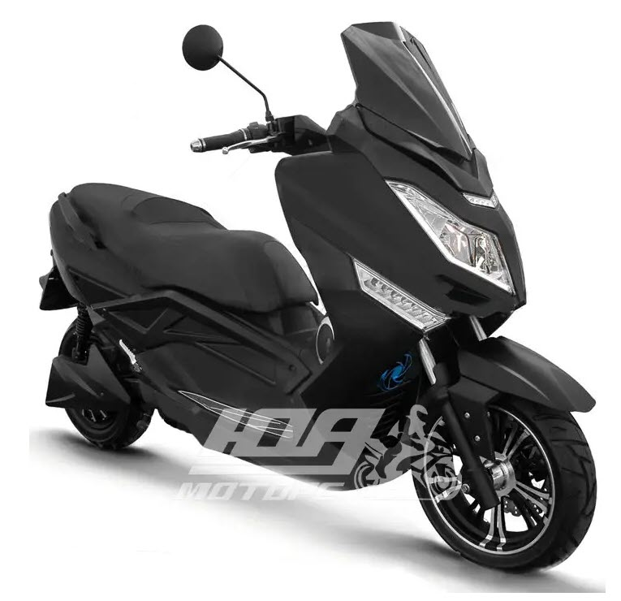
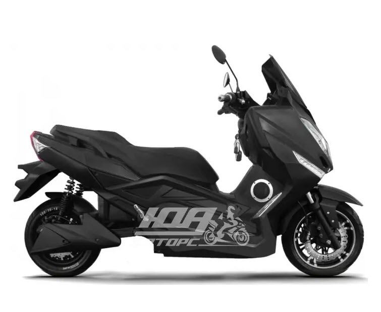
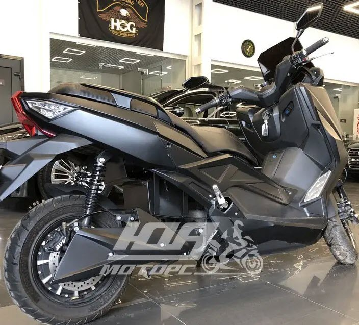
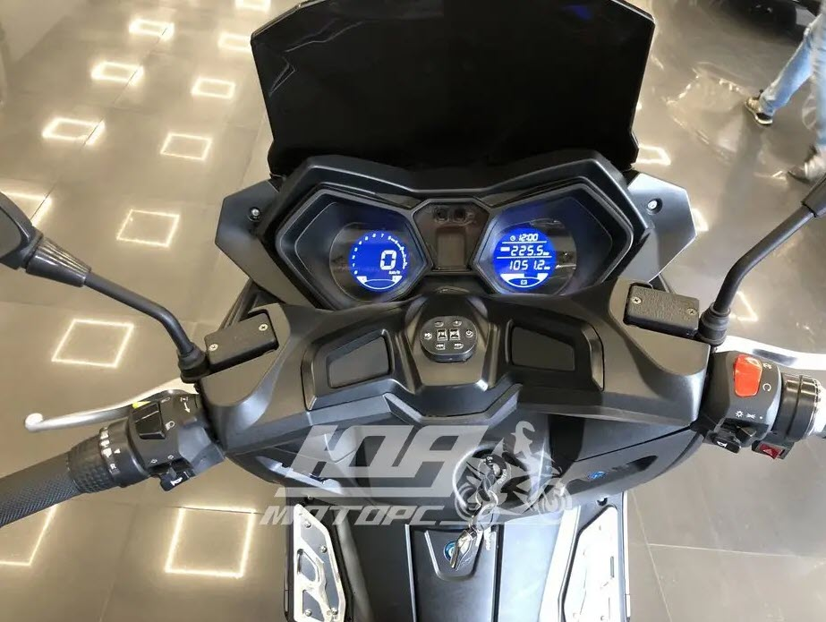

ЭЛЕКТРОСКУТЕР LIKEBIKE MAXI – ПРЕДНАЗНАЧЕНИЕ И ОПИСАНИЕ:
Электрический скутер на каждый день. Модель вобрала в себя почти все характеристики полноценного
скутера, оснащён техническими опциями, которые присущи транспортным средствам такого типа. Скутер может без
проблем
перевозить двух человек, включая водителя. Общая грузоподъемность скутера составляет - 200 [кг] Максимальная
скорость, заявленная производителем, может достигать 70 [км/ч], а максимально возможная дистанция пробега до 80
[км],
в идеальных условиях. Можно сделать вывод, что скутер вобрал все самое лучшее от своих бензиновых аналогов, а
приемлемая цена подчеркивает его привлекательность.

ХАРАКТЕРИСТИКИ ЭЛЕКТРОДВИГАТЕЛЯ:
Электрический двигатель на 2000 [Вт]. Двигатель охлаждаться за счет воздуха.
- Тип аккумулятора - Li-ion.
- Емкость аккумулятора - 40 [А/час].
- Дистанция на одном заряде до 80 [км].
- Время полной зарядки - до 7 [ч]

ОПИСАНИЕ УДОБСТВА ИСПОЛЬЗОВАНИЯ LIKEBIKE MAXI:
Вариаторная (автоматическая) коробка передач.
Электростартер гарантируют мгновенный пуск двигателя при различных погодных условиях.Широкое двухместное сидение,
которое может с легкостью вместить двух взрослых людей.

КОЛЕСА И ТОРМОЗНАЯ СИСТЕМА:
Скутер укомплектован городскими шинами, с которыми он отлично держит сцепление с дорожным покрытием. Переднее
колесо
размером - 12 [дюймов], а задние - 12 [дюймов].
Колесная база: 1560 [мм]
Установленные тормоза - дисковый /
барабанный (задний/передний).

Характеристики:
- Тип двигателя -------------------------- электрический
- Максимальная мощность ------------ 2000 [Вт]
- Дистанция на одном заряде --------- 80 [км]
- Напряжение аккумулятора ---------- 72 [В]
- Время полной зарядки --------------- 7 [ч]
- Емкость аккумулятора --------------- 40 [А/час]
- Максимальная скорость ------------- 70 [км/ч]
- Тормоза, передний/задний ---------- Дисковый / барабанный
- Тип шин -------------------------------- Пневматические (надувные)
- Вес (снаряженный) ------------------- 130 [кг]
- Длина х Ширина х Высота --------- 1730 x 700 x 1035 [мм]